Le service Sécurité regroupe la Santé-Sécurité au Travail (HSE) des deux sites Seem et Semrac : le Document Unique (DUER), les accidents et presqu'accidents, les dotations d'EPI, le risque chimique (FDS + cotation SEIRICH), les vérifications réglementaires (VGP), les formations sécurité et la conformité ISO 45001. Vous y apprendrez à tenir le DUER à jour, à déclarer un événement, à doter un salarié en EPI et à piloter l'inventaire chimique. Le volet environnement (déchets, rejets, ATEX, ISO 14001, RSE) a son propre service : Environnement.
👤 Pour qui : Responsable HSE / QSE (écriture via le rôle Qualité ; lecture : BE, Production, OAS, Maintenance, RH)🧭 Dans l'ERP : Sidebar → Sécurité🗂 9 onglets
Bon à savoir (valable dans tout le service) : chaque liste possède son champ « Rechercher… » (filtre instantané) et chaque ligne porte les boutons Modifier (crayon) et Supprimer (poubelle, avec confirmation). Chaque formulaire de saisie propose en bas la case « Soumettre à la validation de la Direction » : si vous la cochez, l'élément part dans la file « À valider » du service Direction, et une fois la décision rendue un badge apparaît sur la ligne concernée. Les onglets qui gèrent des listes affichent un compteur du nombre d'éléments accessibles.
1
DUER / Risques
À quoi ça sert. C'est le Document Unique d'Évaluation des Risques Professionnels (DUERP) de l'entreprise, obligation du Code du travail (art. R.4121-1) : le recensement des dangers par unité de travail, coté et classé par exercice annuel (mise à jour au moins une fois par an, R.4121-2). Les mesures prévues constituent le plan d'action annuel (PAPRIPACT). C'est le point d'entrée de toute la prévention : on y revient après chaque accident, chaque nouvelle machine, chaque nouveau produit chimique.
Ce que vous voyez
Un seul grand tableau des risques, précédé d'une barre d'outils : le sélecteur d'exercice « DUERP AAAA » (filtre le tableau sur l'année choisie), le bouton « Imprimer / PDF » (exporte la DUERP de l'exercice au format A4 paysage avec le logo de l'entreprise), le bouton « Générer DUERP N+1 » (reconduction annuelle) et le bouton orange « Nouveau risque ». Colonnes du tableau :
Prio — priorité de traitement : P1 (urgent), P2, P3.
Famille — l'une des 20 familles de risque INRS ED 840 (2023), conformité stricte : aucune famille hors nomenclature (chutes de plain-pied, chute de hauteur, circulation interne, produits chimiques, bruit, incendie/explosion, RPS… la liste complète est dans l'onglet Référentiels).
Unité de travail · Danger — où et quoi (14 unités de travail canoniques : Usinage, Montage, Magasins, Bureaux…).
G · F · Criticité · Score — gravité (1-4), fréquence (1-4), criticité = gravité × fréquence avec badge couleur (≤ 4, 5–8, 9–11 orange, ≥ 12) et score brut (méthode Kinney P×F×G×coefficient).
Responsable · Échéance — le pilote de l'action et sa date limite ; l'échéance passe en rouge si elle est dépassée, en jaune si elle tombe dans les 30 jours.
Statut — à traiter, en cours, maîtrisé.
Site — Seem ou Semrac.
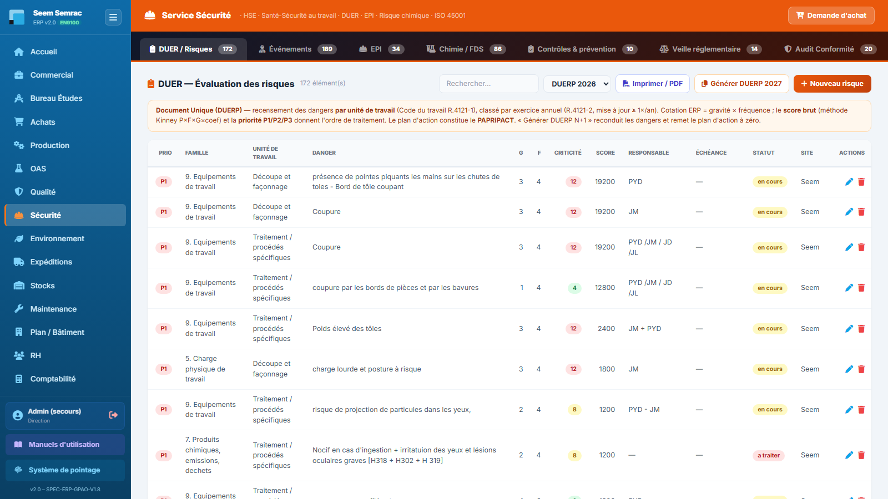
DUER / Risques — le sélecteur d'exercice et les boutons PDF / Générer N+1 en haut, puis le tableau coté avec les badges de priorité et de criticité.
Pas à pas — ajouter un risque au DUER
Cliquez sur « Nouveau risque » : la fenêtre « Risque (DUER) » s'ouvre.
Renseignez l'année (exercice), choisissez la famille de risque dans la liste ED 840, l'unité de travail (obligatoire, liste suggérée) et décrivez le danger (obligatoire) puis la situation dangereuse.
Cotez : gravité, fréquence et maîtrise, chacune de 1 à 4. La criticité et la priorité se déduisent de la cotation.
Décrivez les mesures existantes puis les mesures prévues (c'est le plan d'action / PAPRIPACT), nommez un responsable et fixez une échéance.
Laissez le statut « À traiter » et enregistrez. Le risque apparaît dans le tableau de l'exercice ; faites-le vivre en le passant « En cours » puis « Maîtrisé » au fil des actions.
Pas à pas — reconduire le DUER pour l'année suivante
Sélectionnez l'exercice source dans la liste « DUERP AAAA ».
Cliquez sur « Générer DUERP N+1 » et confirmez. Les dangers et leur cotation sont reconduits ; le plan d'action (PAPRIPACT), les statuts et les échéances repartent à zéro pour le nouvel exercice.
Un message confirme « DUERP N+1 créé : X risques reconduits ». Sélectionnez le nouvel exercice et mettez à jour cotations et plans d'action lors de la revue annuelle.
Le formulaire « Risque (DUER) » en détail
Champ
Saisie
Obligatoire
Explication
Année (exercice)
Nombre
Non
Exercice DUERP de rattachement (ex. 2026) ; pilote le filtre du sélecteur d'année.
Famille de risque
Liste déroulante
Non
Les 20 familles INRS ED 840 (2023), numérotées 1 à 20.
Secteur physique de l'atelier (Oxydation, Tôlerie, Usinage, Magasin…).
Danger
Texte
Oui
Le danger identifié (ex. projection de copeaux).
Risque résiduel
Texte
Non
Ce qui reste après les mesures existantes.
Situation dangereuse
Texte long
Non
Description concrète de l'exposition.
Gravité / Fréquence / Maîtrise
Nombres 1-4
Non
La cotation ; criticité = gravité × fréquence.
Mesures existantes / Mesures prévues
Texte long
Non
Les mesures prévues alimentent le plan d'action (PAPRIPACT).
Responsable · Échéance
Texte · Date
Non
Pilote et date limite de l'action.
Statut
À traiter / En cours / Maîtrisé
Non
Avancement du traitement du risque.
Site
Seem / Semrac
Non
Site concerné.
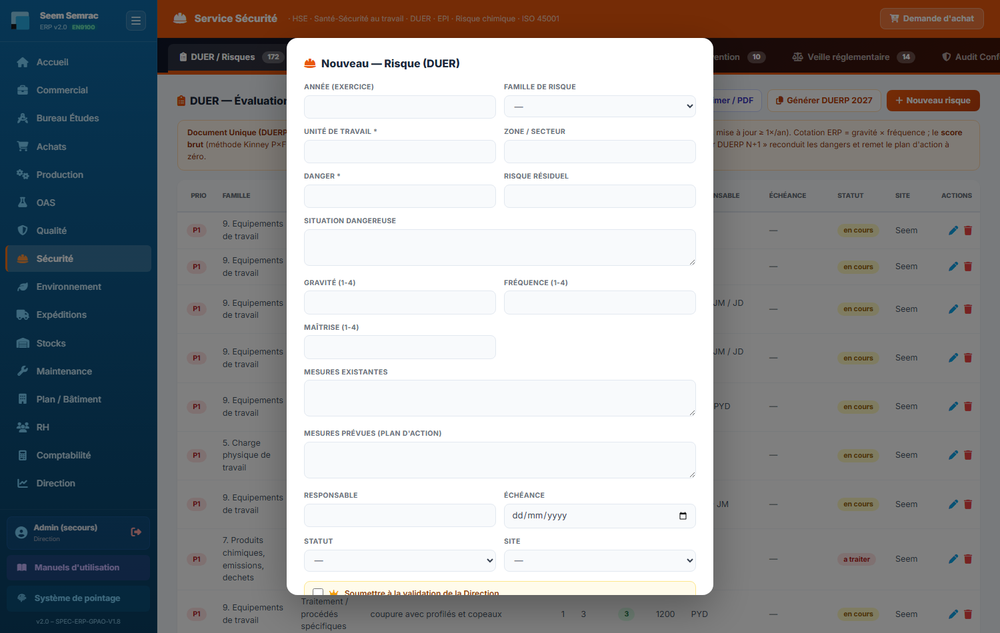
Nouveau risque (DUER) — famille ED 840, unité de travail, cotation 1-4 et plan d'action ; en bas la case « Soumettre à la validation de la Direction ».
Règles & points d'attention
Le DUER est recalé strictement sur les 20 familles ED 840 : ne créez pas de famille « libre », rattachez chaque risque à sa famille de danger (brûlure chimique → famille 7, écran → famille 5, travail isolé → famille 17…).
La mise à jour est réglementaire : au moins une fois par an et après tout accident ou changement notable.
L'export « Imprimer / PDF » reprend l'exercice sélectionné, colonnes réglementaires incluses (mesures existantes, mesures prévues / PAPRIPACT, responsable, échéance) — c'est le document à présenter en cas de contrôle.
Attention : « Générer DUERP N+1 » remet à zéro plan d'action, statuts et échéances du nouvel exercice — l'exercice source, lui, reste intact. Ne lancez la reconduction qu'une fois par an, en fin d'exercice.
Astuce : l'évaluation du risque chimique (onglet Chimie / FDS, cotation SEIRICH) alimente le volet « Produits chimiques » du DUER : cotez d'abord vos produits, puis reportez les situations « Élevé » comme risques prioritaires du Document Unique.
2
Événements
À quoi ça sert. C'est le registre unique des événements sécurité, en trois blocs empilés : les accidents & presqu'accidents (déclaration et enquête), les actions correctives & 5 Pourquoi (traitement des causes) et les flash sécurité (alertes diffusées au personnel). Le compteur de l'onglet cumule les trois listes. Tout ce qui se passe sur le terrain se déclare ici — et alimente les indicateurs TF/TG et le schéma corporel du Tableau de bord.
Ce que vous voyez
Bloc 1 — Accidents & presqu'accidents (bouton « Déclarer »). Colonnes : Date · Type (accident du travail, accident de trajet, maladie professionnelle, presqu'accident, situation dangereuse, soin / premiers secours) · Salarié · Partie du corps · Gravité · Arrêt (badge N j si arrêt, sinon « non ») · Statut · Site. Statuts du circuit d'enquête : nouveau → enquête → actions → clos. Chaque ligne porte en plus un bouton violet (clé-outil) « Créer une action corrective liée ».
Bloc 2 — Actions correctives & 5 Pourquoi (bouton « Nouvelle action »). Colonnes : N° · Type (AC action corrective, PAC presque accident, SD situation dangereuse) · Date · Secteur · Constat · 5 Pourquoi (la chaîne de causes « pourquoi → pourquoi → … », les 3 premiers affichés) · Action(s) d'éradication · Pilote / délai · Statut (en cours, soldé, annulé).
Bloc 3 — Flash Sécurité (bouton « Nouveau flash »). Colonnes : N° · Date · Secteur · Description du flash · Mesures · Rédacteur · Statut (Diffusé, En cours, Soldé, À supprimer). Un flash est une alerte courte diffusée à l'ensemble du personnel : consigne, situation à risque, retour d'expérience — daté et tracé jusqu'à clôture.
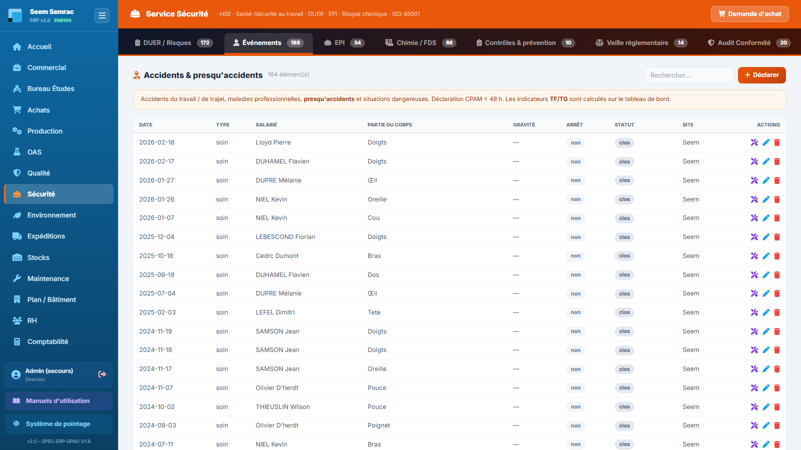
Événements — les trois blocs empilés : accidents & presqu'accidents, actions correctives avec la colonne 5 Pourquoi, flash sécurité.
Pas à pas — déclarer un accident ou un presqu'accident
Cliquez sur « Déclarer » dans le bloc Accidents & presqu'accidents (la date du jour est préremplie).
Choisissez le type d'événement, l'heure, le salarié concerné (liste du personnel), la zone et le poste.
Précisez la partie du corps touchée et la nature de la lésion — c'est ce champ « Partie du corps » qui nourrit le schéma corporel du Tableau de bord.
Cotez la gravité (Bénin, Léger, Grave, Mortel) ; cochez « Avec arrêt » et saisissez les jours d'arrêt le cas échéant (ils alimentent le taux de gravité TG).
Complétez la description, les premiers secours prodigués, les témoins et la date de déclaration CPAM — la déclaration doit partir en moins de 48 h pour un accident du travail.
Enregistrez avec le statut Nouveau. Menez ensuite l'enquête (statut Enquête, champ Analyse des causes), lancez les actions (statut Actions) puis clôturez (Clos).
Pas à pas — traiter la cause (action corrective liée)
Sur la ligne de l'accident, cliquez sur le bouton violet « Créer une action corrective liée » : le formulaire « Action corrective (AC / PAC / SD) » s'ouvre prérempli (type AC, secteur = zone de l'accident, constat = description + salarié + date). Le lien avec l'accident source est conservé.
Menez l'analyse 5 Pourquoi : dans le champ « Cause racine (5 Pourquoi) », enchaînez les pourquoi jusqu'à la cause racine.
Décrivez l'action d'éradication, nommez le pilote, fixez l'échéance, enregistrez.
Quand l'action est faite et son efficacité vérifiée (champ dédié), passez le statut à Soldé.
Le formulaire « Accident / presqu'accident » en détail
Champ
Saisie
Obligatoire
Explication
Type
Liste déroulante
Non
Accident du travail · Accident de trajet · Maladie professionnelle · Presqu'accident · Situation dangereuse · Soin / premiers secours.
Date · Heure
Date · Texte
Non
Date préremplie au jour même.
Salarié
Liste du personnel
Non
Liste alimentée par le module RH.
Zone / secteur · Poste
Texte + suggestions
Non
Lieu de l'événement (secteurs atelier suggérés).
Partie du corps · Nature de la lésion
Texte
Non
La partie du corps alimente le schéma corporel du Tableau de bord.
Gravité
Bénin / Léger / Grave / Mortel
Non
Cotation de l'événement.
Avec arrêt · Jours d'arrêt
Case + nombre
Non
Alimentent les taux TF (fréquence) et TG (gravité).
Témoins · Décl. CPAM le
Texte · Date
Non
Traçabilité de la déclaration (délai légal 48 h).
Description · Premiers secours · Analyse des causes · Actions correctives
Texte long
Non
Le récit, les soins, l'enquête et les suites.
Responsable · Statut · Site
Texte · Liste · Seem/Semrac
Non
Statuts : Nouveau · Enquête · Actions · Clos.
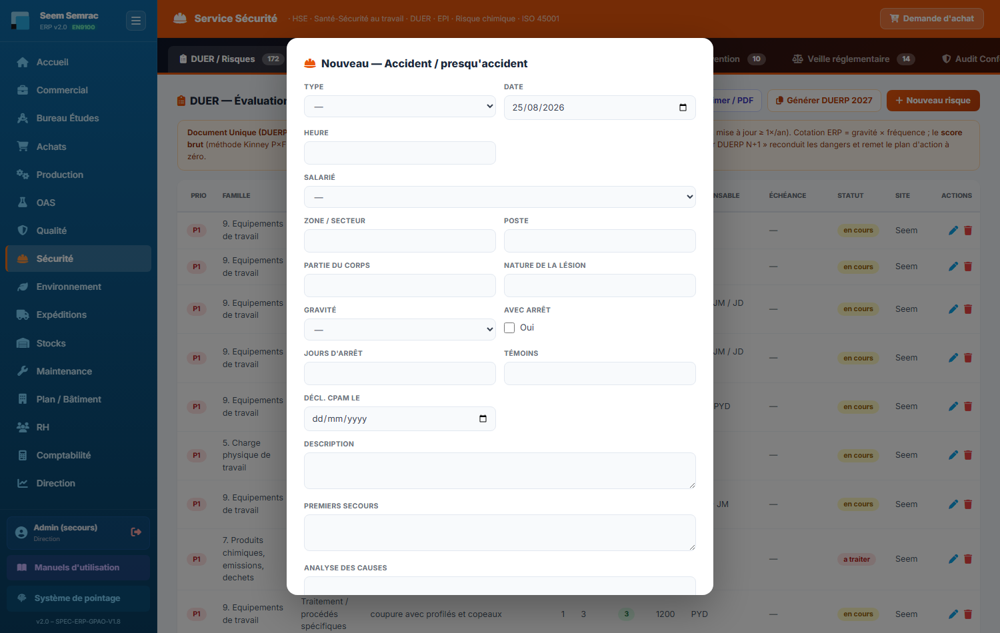
Déclarer un accident — type, salarié, partie du corps, gravité, arrêt et déclaration CPAM.
Règles & points d'attention
Déclarez aussi les presqu'accidents et situations dangereuses : ce sont les remontées terrain qui évitent le prochain accident (indicateur dédié au Tableau de bord).
Un accident du travail se déclare à la CPAM sous 48 h : renseignez la date « Décl. CPAM le » comme preuve.
Les jours d'arrêt ne comptent dans le TG que si la case « Avec arrêt » est cochée.
Un flash sécurité doit rester court et concret : le fait, la consigne, le rédacteur — puis soldez-le une fois la consigne intégrée.
Astuce : passez toujours par le bouton « Créer une action corrective liée » plutôt que par « Nouvelle action » quand l'action découle d'un accident : le préremplissage garde la référence de l'accident source, ce qui trace le lien accident → cause → action.
3
EPI
À quoi ça sert. Deux blocs empilés. Le premier gère les dotations nominatives d'équipements de protection individuelle : qui a reçu quoi, en quelle taille, quand, à quel prix et jusqu'à quelle péremption — c'est la preuve de remise exigée en cas de contrôle ou d'accident. Le second est la matrice EPI × zone : quels équipements sont obligatoires dans quelle zone de l'atelier, complétée des bonnes pratiques sécurité affichées en atelier.
Ce que vous voyez
Bloc 1 — Dotations EPI (boutons « Nouvelle dotation » et « Réappro », qui ouvre une demande d'achat transmise au service Achats). Colonnes : Salarié · Fourniture / EPI · Taille · Qté · Fournisseur · Marque · Remis le · Péremption (rouge si dépassée, jaune si sous 30 jours) · Statut (en service, à renouveler, restitué). En dessous, le Catalogue EPI (bouton « Nouvel EPI ») définit les équipements de référence : EPI · Catégorie · Norme EN · Durée de vie (mois) · Réf. stock · Fournisseur.
Bloc 2 — EPI obligatoires par zone : la matrice croise les 6 EPI de l'atelier (Casque, Lunettes de sécurité, Bouchons d'oreilles, Vêtements de travail, Gants anti-coupure, Chaussures de sécurité) avec les 8 zones physiques (Z1 Dissipation/Tronçonnage, Z2 Oxydation, Z3 Tôlerie, Z4 Bureaux, Z5 Magasin/Expédition, Z6 Collage/Labo, Z7 Montage Puissance, A Allée piétonne). Une coche rouge = EPI obligatoire dans la zone. Suivent les 7 bonnes pratiques sécurité (tenue adaptée, chaussures hors zones piéton, protection auditive, lunettes, gants anti-coupure, posture de manutention, demander conseil).
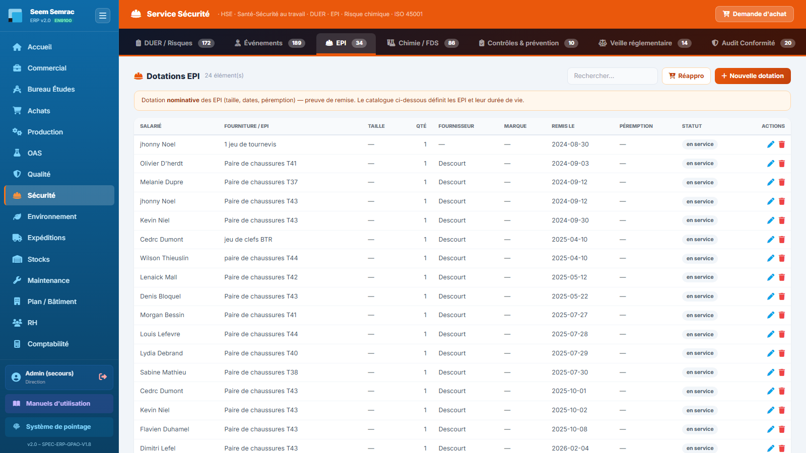
EPI — les dotations nominatives avec leurs péremptions, le catalogue, puis la matrice EPI × zone et les bonnes pratiques.
Pas à pas — doter un salarié
Si l'équipement n'existe pas encore au catalogue, créez-le d'abord (« Nouvel EPI » : désignation, catégorie tête/yeux/audition/voies respiratoires/mains/pieds/corps/antichute, norme EN, durée de vie en mois).
Cliquez sur « Nouvelle dotation », choisissez le salarié, puis l'EPI du catalogue (optionnel) ou saisissez une fourniture libre ; précisez le type (EPI ou Matériel).
Renseignez taille, quantité, fournisseur, marque, référence et prix (les prix alimentent l'indicateur « Dépenses EPI/matériel » du Tableau de bord).
Saisissez la date de remise (préremplie au jour même) et la péremption ; cochez « Signature obtenue » une fois la fiche de remise signée par le salarié.
Enregistrez avec le statut En service. À l'approche de la péremption, la date passe en jaune puis en rouge et l'EPI compte dans la tuile « EPI à renouveler » du Tableau de bord.
Pas à pas — modifier la matrice EPI × zone
Cliquez sur « Modifier la matrice » : les cases deviennent cliquables.
Cliquez sur chaque case à changer : la coche « obligatoire » se pose ou se retire.
Cliquez sur « Sauvegarder » pour enregistrer d'un coup, ou « Annuler » pour tout abandonner. Rien n'est enregistré tant que vous n'avez pas sauvegardé.
Le formulaire « Remise EPI / matériel » en détail
Champ
Saisie
Obligatoire
Explication
Salarié
Liste du personnel
Non
Le bénéficiaire de la dotation.
EPI du catalogue (optionnel)
Liste
Non
Relie la dotation à un EPI défini au catalogue (norme, durée de vie).
Fourniture / EPI (libre)
Texte
Non
Désignation libre si l'article n'est pas au catalogue.
Type
EPI / Matériel
Non
Distingue protection individuelle et matériel remis.
Taille · Quantité
Texte · Nombre
Non
Ce qui est réellement remis.
Fournisseur · Marque · Référence
Liste · Texte · Texte
Non
Traçabilité de l'achat (le fournisseur vient du référentiel Achats).
Prix (€)
Nombre
Non
Valorise la dépense EPI de l'année (Tableau de bord).
Remis le · Péremption
Dates
Non
La péremption déclenche l'alerte de renouvellement (≤ 30 j).
Signature obtenue
Case à cocher
Non
Preuve de remise signée par le salarié.
Statut · Site
En service / À renouveler / Restitué · Seem/Semrac
Non
Cycle de vie de la dotation.
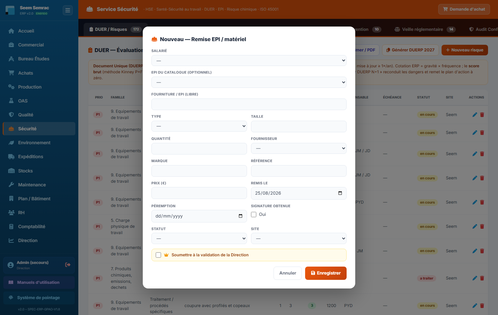
Nouvelle dotation — salarié, EPI du catalogue, taille, prix, dates de remise et de péremption, case signature.
Règles & points d'attention
La dotation est nominative : une ligne par salarié et par équipement remis, avec signature — c'est elle qui prouve la remise en cas d'accident.
Renseignez systématiquement le prix et le fournisseur : les dotations sans prix et les articles non reliés à un fournisseur sont comptés à part sur le Tableau de bord (« dotation(s) sans prix », « Items sans fournisseur »).
Le bouton « Réappro » crée une demande d'achat pré-cadrée côté Achats : utilisez-le dès qu'un stock d'EPI baisse, sans quitter le service.
Attention : en mode édition de la matrice EPI × zone, vos clics ne sont pas enregistrés au fur et à mesure — si vous quittez la page sans cliquer « Sauvegarder », toutes vos modifications sont perdues.
4
Chimie / FDS
À quoi ça sert. Trois blocs empilés couvrent tout le risque chimique. D'abord l'inventaire des produits chimiques avec leurs Fiches de Données de Sécurité (FDS, règlement REACH/CLP), pictogrammes et agents CMR. Ensuite la cotation SEIRICH du danger de chaque produit (méthode INRS ND 2233). Enfin l'exposition par situation de travail : le même produit coté là où et comme il est réellement utilisé, sur 3 axes (Santé, Incendie-Explosion avec alerte ATEX, Environnement). C'est la matière première du volet chimique du DUER.
Ce que vous voyez
Bloc 1 — Produits chimiques & FDS, avec trois boutons : « Nouveau produit », « Pictogrammes » (rappel des pictogrammes CLP/SGH et matrice de compatibilité de stockage : ✗ ne pas stocker ensemble, ● sous conditions, ＋ compatibles) et « Réappro » (demande d'achat). Colonnes : Produit · N° identif. · Réf. produit · Pictos CLP (vignettes) · CMR (badge rouge) · Quantité · Stockage · FDS (FDS présente ou manquante) · Date FDS · Site. Chaque ligne porte quatre actions spécifiques : l'icône fiche produit 360 (ouvre la page du produit réunissant danger, cotation SEIRICH, FDS, péremption des lots et stock, avec un PDF fiche produit), l'icône radiation « + exposition SEIRICH » (crée une situation d'exposition préremplie avec ce produit), l'icône PDF « Exporter la fiche FDS » (résumé FDS interne imprimable, avec logo), puis Modifier et Supprimer.
Bloc 2 — Risque chimique, cotation SEIRICH (bandeau « INDICATIVE — À VALIDER ») : 4 tuiles (Niveau élevé, Niveau moyen, CMR / très toxique, Données incomplètes) puis le tableau : Produit · Dangers (codes H, pictogrammes, badge CMR) · Quantité · Santé · Incendie · Environ. · Priorité. Chaque axe reçoit un niveau Faible, Moyen ou Élevé ; la priorité est le niveau le plus défavorable. Un ⚠ signale les produits sans codes H ni pictogrammes (à compléter dans l'inventaire).
Bloc 3 — Exposition par situation de travail (SEIRICH intermédiaire) : 4 tuiles (Situations niveau élevé, Niveau moyen, Expositions significatives AES/CMR, Situations ATEX), les boutons « Export SEIRICH » (tableur .xlsx de l'inventaire coté, à recopier dans le logiciel SEIRICH de l'INRS), « Rapport SEIRICH » (rapport PDF d'évaluation en 3 parties : inventaire coté, expositions, plan d'actions) et « Nouvelle exposition ». Colonnes du tableau : Produit (+ badge CMR) · Unité de travail (+ tâche) · Procédé · Protection (+EPI) · Santé · Incendie (+ ⚡ATEX si atmosphère explosive probable) · Environ. · Retenu (le plus défavorable des 3 axes, en gras si exposition significative). Chaque ligne porte un bouton clé-outil « Créer une action corrective (réduire l'exposition) ». En dessous, la matrice produits × unités de travail donne, pour chaque croisement, le niveau retenu le plus élevé.
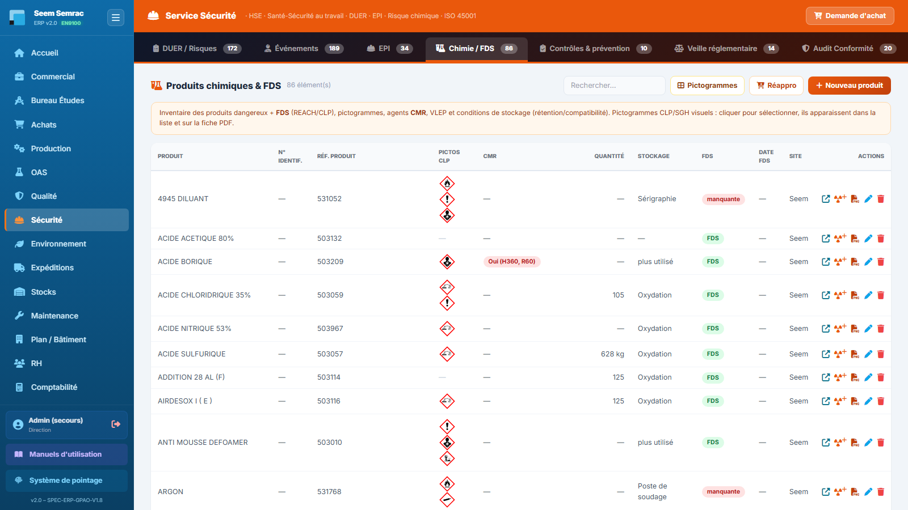
Chimie / FDS — l'inventaire avec pictogrammes CLP et statut FDS, puis la cotation SEIRICH des produits et les expositions par situation de travail.
Pas à pas — référencer un produit chimique
Cliquez sur « Nouveau produit » et saisissez le nom (obligatoire), le fournisseur, le n° d'identification et la référence produit.
Cliquez sur les tuiles de pictogrammes CLP pour sélectionner ceux de l'étiquette (SGH01 à SGH09) et listez les mentions de danger H/P (séparées par des virgules, ex. H226, H315) : ce sont ces données qui alimentent la cotation SEIRICH.
Renseignez la catégorie CMR le cas échéant, la VLEP, la référence et la date de la FDS (et son lien URL si elle est numérisée).
Précisez la zone de stockage, la rétention, les compatibilités, la quantité détenue et le statut (En stock / En commande / Périmé), puis enregistrez.
Le produit apparaît dans l'inventaire et dans le tableau de cotation SEIRICH juste en dessous, avec son niveau calculé automatiquement.
Pas à pas — coter une situation d'exposition (SEIRICH)
Depuis l'inventaire, cliquez sur l'icône radiation du produit concerné (formulaire prérempli) ou sur « Nouvelle exposition ».
Indiquez l'unité de travail (obligatoire), la zone et la tâche exposante (ex. dégraissage au pinceau).
Décrivez la mise en œuvre : procédé (clos en permanence, clos ouvert régulièrement, à l'air libre, dispersif), quantité mise en œuvre et unité, fréquence (occasionnelle à permanente), état physique / volatilité.
Renseignez la protection collective (vase clos, captage à la source, ventilation générale, aucune) et les cases : EPI adapté porté, protection non entretenue, fumée/poussière issue de transformation, non utilisé depuis ≥ 1 an, rejet possible vers l'environnement.
Enregistrez : la ligne apparaît cotée sur les 3 axes, avec le niveau Retenu et, le cas échéant, l'alerte ⚡ATEX. Les situations « Élevé » remontent en tête de liste.
Pour chaque situation Élevé ou CMR, cliquez sur le bouton clé-outil : l'action corrective préremplie rappelle la priorité STOP (Substituer · Technique : capter à la source · Organiser · Protéger par EPI).
Le formulaire « Produit chimique / FDS » en détail
Champ
Saisie
Obligatoire
Explication
Produit
Texte
Oui
Nom commercial du produit.
Fournisseur
Liste
Non
Référentiel fournisseurs (Achats).
N° d'identification · Réf. produit
Texte
Non
Identifiants internes (étiquetage, codes).
État
Liquide / Solide / Gaz-aérosol
Non
État physique du produit.
Pictogrammes CLP
Tuiles cliquables SGH01-09
Non
Cliquer pour sélectionner ; ils s'affichent dans la liste et sur la fiche PDF.
Mentions de danger (H/P)
Liste (virgules)
Non
Codes H et P de l'étiquette — la cotation SEIRICH en dépend.
CMR (cat.) · VLEP
Texte
Non
Catégorie CMR et valeur limite d'exposition professionnelle.
Réf. FDS · Date FDS · Lien FDS (URL)
Texte · Date · URL
Non
Sans réf. ni lien, le produit est marqué « FDS manquante ».
Zone de stockage · Rétention · Compatibilités
Texte · Case · Texte long
Non
Conditions de stockage (voir la matrice « Pictogrammes »).
Quantité · Unité
Nombre · Texte
Non
Quantité détenue — entre dans la cotation Phase 1.
Statut · Site
En stock / En commande / Périmé · Seem/Semrac
Non
Cycle de vie du produit.
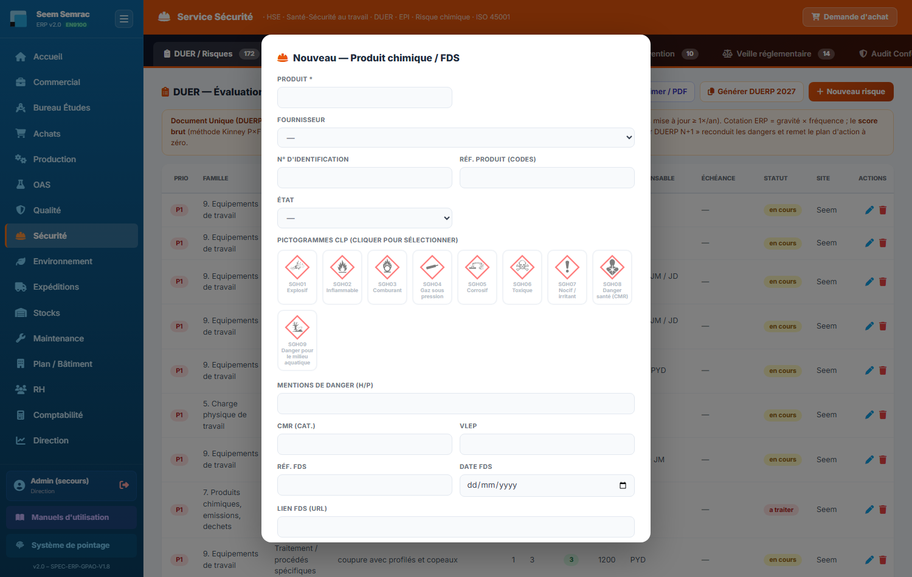
Nouveau produit chimique — les tuiles de pictogrammes CLP cliquables, les mentions H/P et les informations FDS.
Règles & points d'attention
La cotation SEIRICH est indicative : cote par défaut (méthode simplifiée INRS ND 2233 / R 409) à faire valider par le référent QHSE et à recouper avec le logiciel SEIRICH de l'INRS — utilisez « Export SEIRICH » pour recopier l'inventaire dans l'outil officiel.
Un produit sans codes H ni pictogrammes est marqué ⚠ données incomplètes et sa cotation n'est pas fiable : complétez d'abord l'inventaire.
Les produits CMR sont prioritaires pour la substitution — le plancher de cotation santé leur est appliqué d'office.
Le résumé FDS exporté en PDF est un document interne : la FDS officielle du fournisseur fait foi pour les mesures de prévention et d'urgence.
Le niveau retenu d'une exposition dépend de la plus grande quantité utilisée dans l'unité de travail : une même quantité peut donc être cotée différemment selon la zone.
Astuce : l'icône « fiche produit 360 » ouvre une page dédiée au produit (/securite/chimique/…) qui réunit danger, cotation SEIRICH, FDS, péremption des lots et stock : c'est la page à consulter avant un achat ou lors d'un audit.
5
Contrôles & prévention
À quoi ça sert. Trois blocs empilés pour tout ce qui se planifie et se vérifie : les vérifications générales périodiques (VGP) obligatoires des équipements, les formations sécurité requises par poste (croisées avec les habilitations réellement détenues, module RH) avec les exercices d'évacuation, et les plans de prévention & permis pour les interventions d'entreprises extérieures.
Ce que vous voyez
Bloc 1 — Vérifications périodiques (VGP) (bouton « Nouvelle vérification ») : l'échéancier des contrôles réglementaires — levage, électrique, incendie, ESP (équipements sous pression), portes/portails, racks, ventilation, ATEX. Colonnes : Type · Équipement · Organisme · Contrôle (date) · Prochaine (rouge si dépassée, jaune sous 30 jours) · Résultat (conforme, avec observations, non conforme) · Statut (à jour, à prévoir, en retard) · Site.
Bloc 2 — Formations sécurité requises (bouton « Nouveau besoin ») : la matrice des formations obligatoires par poste (accueil, SST, habilitation électrique, CACES, ATEX, gestes & postures…). Colonnes : Poste / famille · Formation · Obligatoire · Périodicité (« N mois » ou « unique ») · Site. Un encart bleu récapitule les certifications et habilitations du module RH et le nombre à renouveler / expirées. Suit la matrice de suivi des formations & habilitations : chaque salarié actif × chaque formation requise pour son poste, avec un symbole par case (✓ valide · ⚠ à renouveler · ⏱ expirée · ✗ manquante · — non requise) et un % de couverture par salarié et global. Puis les Exercices d'évacuation / incendie (bouton « Nouvel exercice ») : Date · Type (évacuation, incendie, POI) · Site · Participants · Durée · Conforme.
Bloc 3 — Plans de prévention & permis (bouton « Nouveau document ») : plans de prévention (entreprises extérieures, décret 92-158), protocoles de sécurité chargement/déchargement et permis de feu. Colonnes : Type · Entreprise ext. · Opération · Début · Fin · Statut (en cours, clos) · Site.
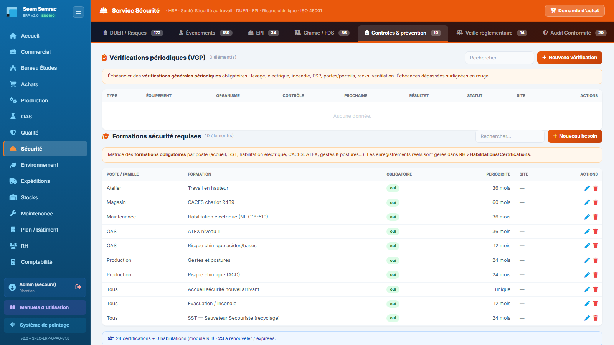
Contrôles & prévention — l'échéancier VGP avec les échéances colorées, la matrice formations × salariés, les exercices et les plans de prévention.
Pas à pas — enregistrer une vérification périodique (VGP)
Cliquez sur « Nouvelle vérification », choisissez le type (levage, électrique, incendie, ESP, portes/portails, racks, ventilation, ATEX) et nommez l'équipement (obligatoire) ; reliez-le à une machine du parc si elle existe dans l'ERP.
Indiquez l'organisme vérificateur, la date du contrôle et la prochaine échéance (ou la périodicité en mois).
Saisissez le résultat (Conforme / Avec observations / Non conforme), les levées de réserves éventuelles et le lien vers le rapport.
Enregistrez avec le statut adéquat (À jour / À prévoir / En retard). Les VGP dont l'échéance est dépassée comptent dans la tuile « VGP en retard » du Tableau de bord.
Pas à pas — suivre les formations sécurité
Déclarez chaque besoin avec « Nouveau besoin » : poste / famille (obligatoire), formation (obligatoire), obligatoire ou non, périodicité de recyclage en mois (vide = formation unique).
Consultez la matrice de suivi : elle croise automatiquement ces besoins avec les certifications / habilitations saisies dans RH › Habilitations & Certifications — survolez l'en-tête d'une colonne pour le détail (poste, recyclage).
Traitez les ✗ (manquantes) et ⏱ (expirées) en planifiant les formations côté RH : la matrice se met à jour d'elle-même, la couverture remonte.
Après chaque exercice d'évacuation ou d'incendie, tracez-le avec « Nouvel exercice » (date, participants, durée, scénario, conformité).
Le formulaire « Vérification périodique (VGP) » en détail
Relie la VGP à une machine de l'ERP (Production/Maintenance).
Organisme
Texte
Non
Organisme de contrôle agréé.
Date contrôle · Prochaine échéance · Périodicité (mois)
Dates · Nombre
Non
L'échéancier ; l'échéance dépassée passe en rouge.
Résultat
Conforme / Avec observations / Non conforme
Non
Conclusion du rapport de vérification.
Levée des réserves
Texte long
Non
Suivi des observations jusqu'à leur levée.
Lien rapport (URL)
URL
Non
Rapport numérisé de l'organisme.
Statut · Site
À jour / À prévoir / En retard · Seem/Semrac
Non
État de l'échéancier.
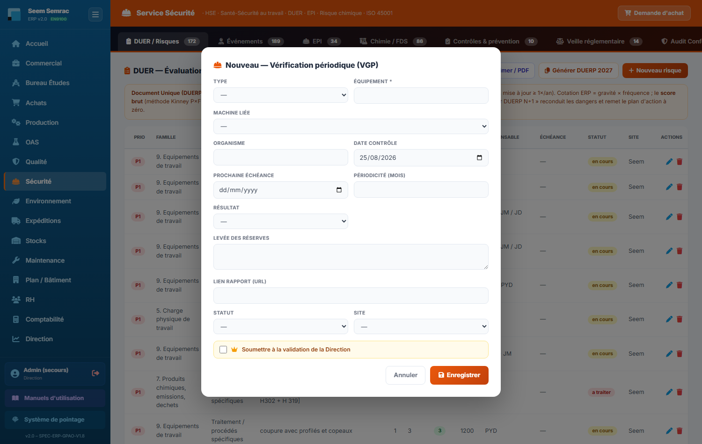
Nouvelle vérification (VGP) — type, équipement, organisme, dates de contrôle et prochaine échéance, résultat.
Règles & points d'attention
Les enregistrements réels de formation (dates, organismes, attestations) vivent dans RH › Habilitations & Certifications ; cet onglet définit les besoins par poste et en mesure la couverture.
Une VGP « Non conforme » appelle une levée de réserves tracée — ne la passez « À jour » qu'une fois les réserves levées.
Un plan de prévention se rédige avant l'intervention de l'entreprise extérieure ; un permis de feu avant tout travail par point chaud.
Astuce : la matrice formations reconnaît les intitulés (SST, CACES, habilitation électrique, ATEX, hauteur, gestes & postures, chimique, incendie/évacuation, pontier-élingueur, accueil) : nommez vos besoins avec ces mots-clés pour que le croisement avec les certifications RH se fasse tout seul.
6
Veille réglementaire
À quoi ça sert. C'est le registre des obligations qui s'imposent à l'entreprise en santé-sécurité : Code du travail, REACH-CLP, risque chimique, ISO 45001, ISO 9001, EN 9100. Pour chacune, on dit si elle nous est applicable, où on en est, qui en répond et quand il faut la revérifier. C'est la checklist que l'on présente à l'inspection du travail et à la CARSAT.
Ce que vous voyez
Un tableau unique et son bouton « Nouvelle obligation ». Colonnes : Domaine · Obligation · Référence réglementaire · Échéance (surlignée en rouge si dépassée) · Responsable · Statut — à vérifier, conforme, partiel, non conforme.
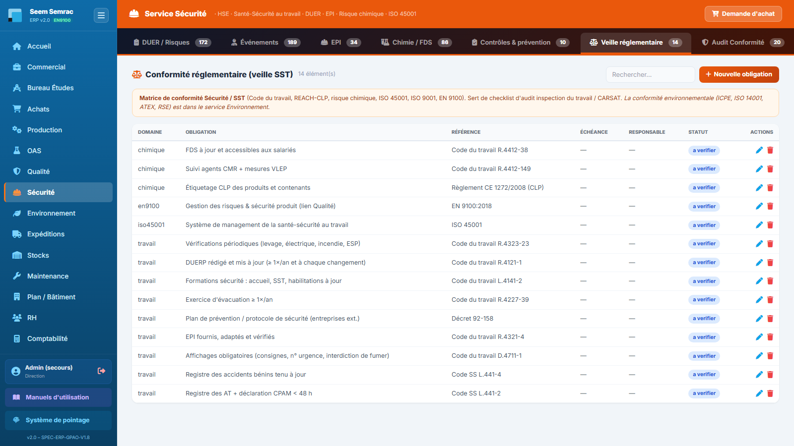
Veille réglementaire — la matrice de conformité SST : une ligne par obligation, son statut, son responsable et son échéance de revérification.
Pas à pas — tenir la matrice de conformité
Cliquez sur « Nouvelle obligation ».
Choisissez le domaine (Code du travail, Risque chimique, ISO 45001, ISO 9001, EN 9100), décrivez l'obligation (obligatoire) et sa référence réglementaire.
Cochez « Applicable », positionnez le statut (À vérifier / Conforme / Partiel / Non conforme / Non applicable), datez le dernier contrôle et fixez l'échéance de la prochaine vérification.
Nommez un responsable et joignez la preuve (URL du document).
Règles & points d'attention
Les obligations non conformes ou échues alimentent la tuile « Alertes conformité » du Tableau de bord.
Chaque obligation gagne à porter une preuve (rapport, registre, attestation) : c'est exactement ce que demandent l'inspection du travail et la CARSAT.
La conformité environnementale (ICPE, ISO 14001, ATEX, RSE) ne se gère pas ici : elle est dans le service Environnement, onglet Veille réglementaire, avec la même mécanique.
Astuce : passez la matrice en revue à échéances fixes (revue de direction, préparation d'audit) en triant par la colonne Échéance grâce au champ Rechercher — les échues sont surlignées en rouge.
7
Audit Conformité
À quoi ça sert. C'est le cycle d'audit interne appliqué à la santé-sécurité : on ordonnance les audits ISO 45001 de l'année, on les réalise, on consigne les écarts et on solde les plans d'action. Cet onglet est identique à celui de la Qualité et de l'Environnement — mêmes quatre sous-onglets, même planning, seul le filtre normatif change (ici l'ISO 45001).
Ce que vous voyez
Une barre de quatre sous-onglets, chacun avec son compteur (sauf Référentiels, qui n'est pas une liste) : Programme · Constats & plans d'action · Grilles · Référentiels. Le bouton actif est bleu, les autres gris ; le contenu change sous la barre sans recharger la page, et Programme s'affiche à l'ouverture.
Programme — le planning d'audit interne, commun avec le service Qualité mais filtré sur l'ISO 45001 : seules remontent ici les lignes portant ce référentiel ou le thème I, et les compteurs ne comptent que ce périmètre. Écran détaillé au paragraphe suivant.
Constats & plans d'action — les écarts relevés pendant les audits (NC ou Axe) avec leur preuve et l'action décidée. Le bouton « Convertir en NC » bascule un constat dans le cycle 8D de la Qualité.
Grilles — les questionnaires d'audit qui posent au moins une question de santé-sécurité ; les grilles purement qualité ou informatique ne remontent pas ici. Chaque grille est affichée entière (elle reste le document de terrain, identique au PDF vierge imprimable) et porte un repère N question(s) ISO 45001 indiquant ce qui vous concerne. Pour chaque question : libellé, preuve attendue, clause, thème et mode (AUTO pré-rempli par les sondes de l'ERP, ASSISTÉ, MANUEL).
Référentiels — la documentation normative de ce service uniquement : le thème d'audit processus I (santé-sécurité au travail), les thèmes terrain T5, T7, T8, T9, et la grille de conformité clause par clause de l'ISO 45001. Les autres normes du SMI (ISO 9001, EN 9100, ISO 14001, ISO 27001) sont dans Qualité › Audit Conformité › Référentiels, qui reste le hub du système.
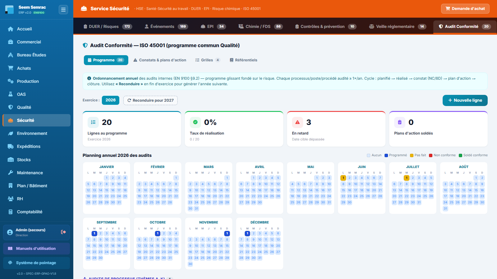
Audit Conformité — les quatre sous-onglets standard, ouverts sur le programme d'audit filtré ISO 45001, planning annuel compris. Exactement la même barre qu'en Qualité et en Environnement.
Le programme d'audit, écran par écran
Le sous-onglet Programme est identique à celui du service Qualité : c'est le même ordonnancement annuel des audits internes (EN 9100 §9.2), simplement filtré sur le référentiel du service — ici l'ISO 45001. Une ligne créée par la Qualité avec ce référentiel apparaît donc ici, et réciproquement.
Choisissez l'exercice. Les pastilles d'années, en haut à gauche, basculent le programme d'une année sur l'autre ; l'exercice le plus récent est sélectionné à l'ouverture.
Lisez les quatre indicateurs de l'exercice affiché : Lignes au programme, Taux de réalisation, En retard (date cible passée sans audit réalisé) et Plans d'action soldés. Ils ne comptent que le périmètre du service.
Servez-vous du planning annuel — les douze mois de l'exercice, une case par jour, colorée selon l'état : bleu = audit programmé, jaune = pas fait (échéance dépassée), rouge = non conforme (NC ouverte), vert = soldé conforme ; une case pâle signifie qu'aucun audit n'est prévu ce jour-là. Cliquez une case occupée pour consulter l'audit ou le déprogrammer ; cliquez une case vide pour y affecter un audit non encore programmé (ou en déplacer un).
Ajoutez une ligne avec « + Nouvelle ligne » : le formulaire demande le type (processus, poste, flash, procédé spécial, exigence client), la famille de processus, l'entité auditée (obligatoire), les thèmes, les référentiels couverts (cases à cocher), la date cible, le temps estimé, l'auditeur, l'audité principal et la grille associée. Sous le planning, les lignes se rangent dans les tableaux « Audits de processus » et « Audits de poste & flash ».
Reconduisez le programme en fin d'exercice avec « Reconduire pour année+1 » : tout le programme est recopié sur l'année suivante, les dates décalées d'un an et les statuts remis à « planifié ».
Bon à savoir : le planning est partagé avec la Qualité — un seul calendrier pour tout le SMI. Le filtre porte sur le référentiel : une ligne créée depuis cet écran sans cocher l'ISO 45001 (et sans thème I) n'y réapparaîtra pas. Cochez donc toujours le référentiel.
Règles & points d'attention
Le programme d'audit est partagé avec le service Qualité : une ligne créée ici (référentiel 45001) apparaît aussi dans Qualité › Audit, et réciproquement — un seul planning pour tout le SMI.
Les obligations réglementaires ne sont plus dans cet onglet : elles ont leur propre onglet Veille réglementaire (le précédent). L'audit vérifie, la veille recense — deux gestes différents.
Cet onglet a exactement la même structure en Qualité, en Sécurité et en Environnement : ce que vous apprenez ici vaut dans les trois services.
8
Référentiels
À quoi ça sert. C'est la page de consultation des vocabulaires contrôlés QHSE, partagée entre Qualité et Sécurité : elle garantit que tout le monde emploie les mêmes mots et les mêmes codes dans les formulaires. Aucune saisie ici — on s'y réfère quand on hésite sur un acronyme, une famille de risque ou un code de zone.
Ce que vous voyez
Des cartes de référence empilées :
Acronymes et Imputation / secteurs (code → service) — le lexique commun QHSE.
Types de NC, types de défaut, types de cause, décisions qualité, dérogations (AT = Accord Total, AL = Accord Limité, R = Refus) — vocabulaires partagés avec le service Qualité.
Sécurité — les types d'événements et les secteurs.
Familles de risque DUER — INRS ED 840 (2023) — les 20 familles, en conformité stricte : aucune famille hors nomenclature.
Unités de travail (DUER) — les 14 unités canoniques utilisées dans les formulaires.
Zones atelier (code → secteur : Z1 Dissipation/Tronçonnage … Z7 Montage Puissance, A Allée piétonne) et EPI de l'atelier (les 6 EPI de la matrice).
Bonnes pratiques sécurité — les 7 consignes affichées en atelier.
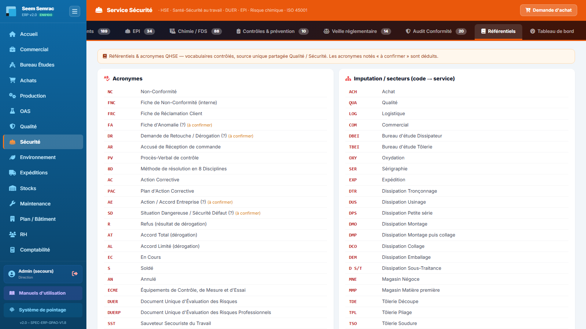
Référentiels — les cartes de vocabulaires contrôlés QHSE, dont les 20 familles ED 840 et les zones atelier.
Pas à pas
Ouvrez l'onglet quand un formulaire vous demande une valeur codée (famille de risque, zone, secteur, type de dérogation…).
Repérez la carte correspondante et utilisez la valeur exacte du référentiel dans votre saisie — les listes déroulantes des formulaires reprennent ces mêmes valeurs.
Règles & points d'attention
Les acronymes notés « à confirmer » sont déduits : signalez toute correction au référent QHSE.
Ces référentiels sont la source unique Qualité / Sécurité : ne pas inventer de variantes dans les champs libres.
9
Tableau de bord
À quoi ça sert. La photographie chiffrée de la sécurité de l'entreprise : accidentologie de l'année, taux réglementaires TF/TG, alertes (EPI, VGP, conformité, FDS) et dépenses. C'est l'onglet à projeter en réunion sécurité ou en revue de direction — tout s'y calcule automatiquement à partir de ce que vous avez saisi dans les autres onglets.
Ce que vous voyez
Quatorze tuiles d'indicateurs :
Jours sans accident (avec la date du dernier accident du travail) · Accidents de l'année (dont avec arrêt) · Presqu'accidents de l'année (remontées terrain).
Taux de fréquence (TF) = accidents avec arrêt × 1 000 000 / heures travaillées, et Taux de gravité (TG) = jours d'arrêt × 1 000 / heures travaillées — les heures viennent des pointages du module RH ; sans heures saisies, les taux affichent « — ».
EPI à renouveler (péremption sous 30 jours ou dépassée) · VGP en retard · Alertes conformité (obligations non conformes ou échues) · FDS manquantes (produits chimiques sans FDS) · Conformité (obligations conformes / total).
Eau (mois) et Déchets (mois) — mesures environnementales du mois en cours.
Dépenses EPI/matériel de l'année (somme des prix des dotations, avec rappel des dotations sans prix) · Items sans fournisseur (EPI et produits chimiques à relier au référentiel Achats).
Sous les tuiles, le schéma corporel des accidents : deux silhouettes (face et dos) colorées en dégradé (jaune → rouge) selon le nombre de cas par partie du corps — main/doigts, yeux, oreille, dos/colonne, tête, bras/épaule/coude, jambe/genou, pied/cheville, cou/nuque, tronc — accompagnées du top des localisations et de l'échelle « Moins → Plus ». Il se construit à partir du champ « Partie du corps » des accidents et soins déclarés dans l'onglet Événements.
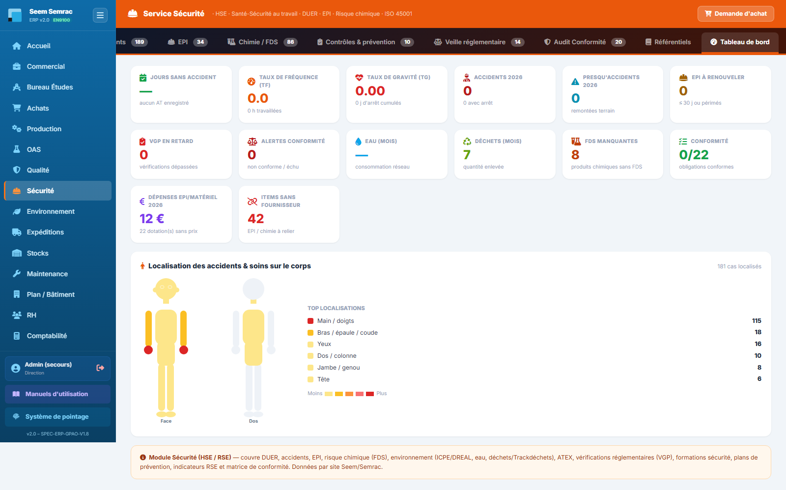
Tableau de bord — les tuiles TF/TG et alertes en haut, le schéma corporel face/dos avec le top des localisations en dessous.
Pas à pas — préparer la réunion sécurité
Vérifiez d'abord les tuiles d'alerte : VGP en retard, EPI à renouveler, alertes conformité, FDS manquantes — chacune renvoie à l'onglet où agir (Contrôles, EPI, Conformité, Chimie).
Commentez l'accidentologie : jours sans accident, TF/TG, presqu'accidents — et appuyez-vous sur le schéma corporel pour cibler la prévention (ex. beaucoup de mains → campagne gants).
Si TF et TG affichent « — », faites saisir les heures travaillées dans RH › Système de pointage : les taux se calculent dès que des heures existent sur l'année.
Règles & points d'attention
Le tableau de bord ne se saisit pas : il reflète les autres onglets. Un chiffre faux se corrige à la source (l'événement, la dotation, la VGP…).
Les tuiles Eau et Déchets proviennent des mesures environnementales — désormais saisies dans le service Environnement.
Le schéma corporel ne compte que les événements dont la partie du corps est renseignée : soignez ce champ à la déclaration.
Astuce : la tuile « Items sans fournisseur » est votre checklist de fiabilisation des données : reliez chaque EPI et chaque produit chimique à son fournisseur pour fiabiliser les dépenses et les réapprovisionnements.